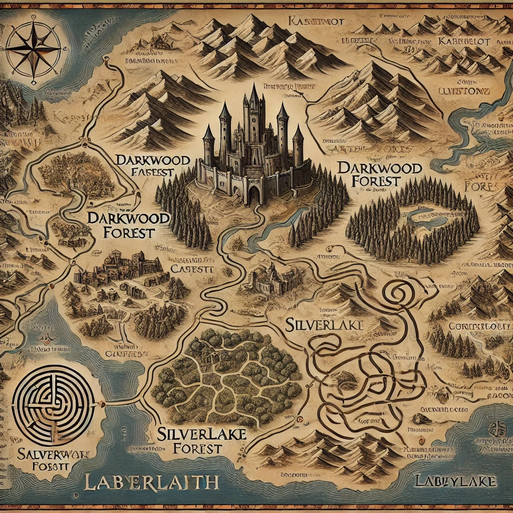

La Quête du Trésor de Kaamelot
Instructions
Bienvenue, brave chevalier ! Votre quête se déroule en deux étapes :
- Trouvez le chemin le plus court vers l'entrée du labyrinthe sur la carte du royaume.
- Naviguez dans le labyrinthe pour découvrir le trésor caché.
Carte du Royaume
